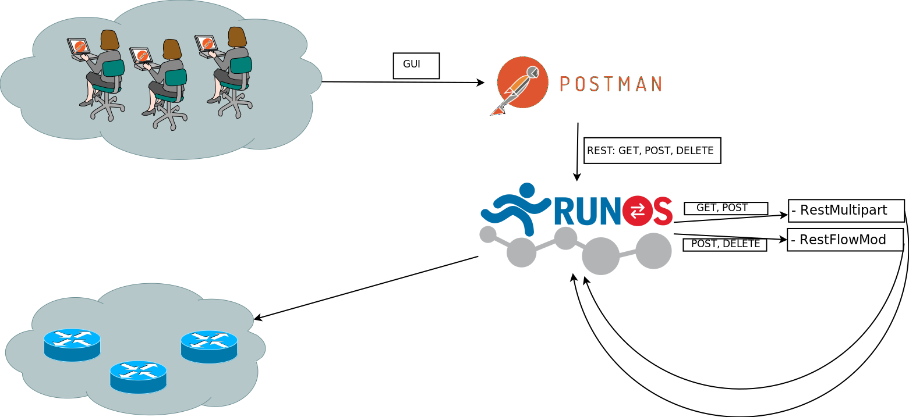
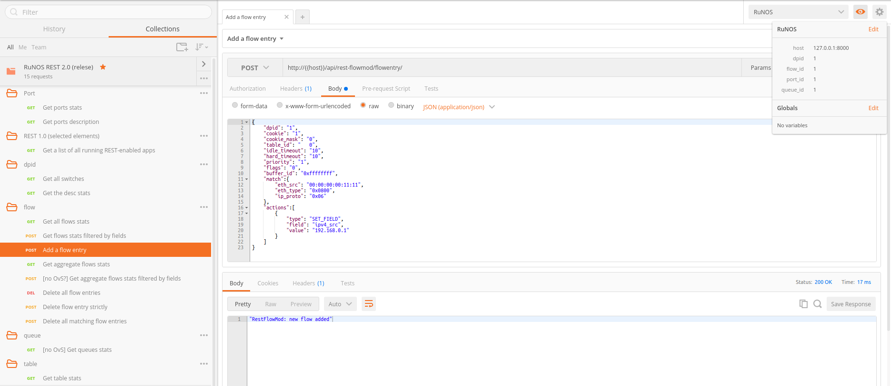
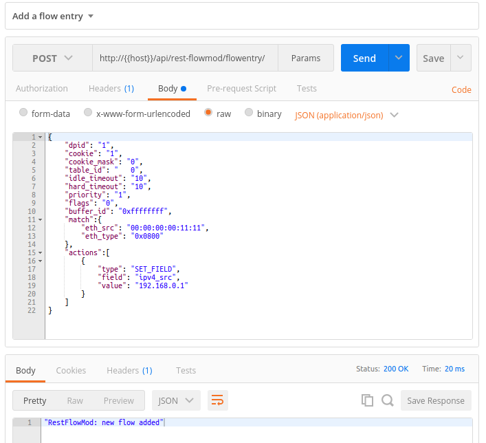

6. REST¶
6.1. Введение¶
Для взаимодействия с приложениями в runtime, RuNOS предлагает пользователям воспользоваться REST API. Многие дефолтные приложения уже имеют свой REST API. Так же Вы можете развить его под Ваши нужды, либо с нуля добавить поддрежку rest в Ваше приложение.
Наш разговор о REST в RuNOS будет состоять из двух частей:
- внешний (а точнее – north-bound) API RuNOS, состоящий из rest-интерфейсов приложений.
- внутренний API RuNOS, используемый при реализации rest-интерфейса приложения,
6.2. Внешний API RuNOS. Использование REST-интерфейса.¶
Доступ к внешнему API RuNOS расположен по адресу http://127.0.0.1:8000/api/ и реализован как REST-интрефейс. Он формируется из совокупности REST-интерфейсов отдельных приложений. Таким образом, запросы следует отправлять по адресам вида http://127.0.0.1:8000/api/my-app/query/, где
127.0.0.1:8000– путь к TCP-серверу контроллера,my-app– rest-name приложения,query– содержательная часть запроса (передается в приложение)
Для изуечения конкретных REST-запросов следует перейти документацию по интересующему Вас приложению. Например, RestMultipart.
6.2.1. REST 2.0: приложения RestMultipart и RestFlowMod¶
6.2.1.1. Введение¶
Новый, написанный с нуля rest-интерфейс – основное нововведение RuNOS версии 0.6.1. Новый rest отвечает следующим требованиям:
масштабируемость: добавление поддрежки новых полей или методов происходит в несколько строк кода и не перекрывает, а лишь дополняет уже реализованный функцианал.
семантичность: если Вы хотите создать новый поток (flow entry), то Вам нужно выполнить POST-запрос с добавычным адресом
flow, получить информацию по существующему – GET по тому же адресу. И так далее.user-friendly
- Вам не требуется читать ни одной строчки этого man’а, чтобы начать пользоваться новым rest-интерфейсом! Мы приготовили для Вас структурированную и прокомментированную коллекцию REST-запросов к контроллеру для приложения Postman. Надеемся, сторонники GUI оценят!
- Вы уже знакомы с REST-интерфейсом контроллера Ryu? Может, у Ваc уже есть скрипты для работы с ним? Наш rest полностью совместим с ним на уровне Postman-коллекции, а вашим скриптам потребуется лишь незначительная доработка. За подробностями загляните в раздел особенности использования.
- В то же время, Вы имеете дело с полноценным rest-интерфейсом: вооружитесь данной документацией и исследуйте его с
cURL! Выбор интерфейса для работы с API всегда остается за Вами!
- локализованность: весть новый REST располанается в 2 модулях Runos: RestMultipart и RestFlowMod. Вам больше не нужно искать нужный метод по десятку классов.
Примечание
Rest версии 0.6.1 обратно совместим с Rest’ом версии 0.6. Большинство deprecated-обработчиков расположено по тем же путям, что и раньше.
6.2.1.2. Арихитектура сервиса¶
Пути для обращения к API формируется следующим образом:
http://{{host}}/api/<app_name>/<parameters>Примеры:
- GET:
http://{{host}}/api/rest-multipart/port/{{dpid}}/all - GET, POST:
http://{{host}}/api/rest-multipart/flow/{{dpid}} - POST:
http://{{host}}/api/rest-flowmod/flowentry/ - DELETE:
http://{{host}}/api/rest-flowmod/flowentry/clear/{{dpid}}
- GET:
Записи вида {{variable}} – синтаксис обозначения переменных в Postman. Чтобы сформировать html-запрос, подставьте на их места конкретные значения. Примеры этих значений Вы найдете в нашей коллекции запросов.
6.2.1.3. Postman collection¶
Postman collection:
- link: https://www.getpostman.com/collections/34a4933f146bee7383d9
- file:
RuNOS_REST_2.0.postman_collection.json
Environment: RuNOS_REST_2.0.postman_environment.json
6.2.1.4. Особенности использования¶
Все без исключения значения в json-описания тела POST-запроса должны быть представлены как строки. Это сделано, чтобы обеспечить (где того требует стандарт OpenFlow1.3) поддержку чисел, превышающих std::numeric_limits<int>::max().:
{ "dpid": "1", }
Ниже приведен список поддерживаемых запросов. За подробностями обращайтеся к Postman-коллекции.
port
- GET:
/api/rest-multipart/port/{{dpid}}/all– Get ports stats - GET:
/api/rest-multipart/port-desc/{{dpid}}– Get ports description
- GET:
REST 1.0 (selected elements)
- GET:
/apps– Get a list of all running REST-enabled apps
- GET:
dpid
- GET:
/api/rest-multipart/switch/all– Get all switches - GET:
/rest-multipart/switch/{{dpid}}– Get the desc stats
- GET:
flow
- GET:
/api/rest-multipart/flow/{{dpid}}– Get all flows stats - POST:
/api/rest-multipart/flow/{{dpid}}– Get flows stats filtered by fields - POST:
/api/rest-flowmod/flowentry/– Add a flow entry - GET:
/api/rest-multipart/aggregate-flow/{{dpid}}– Get aggregate flows stats - POST:
/api/rest-multipart/aggregate-flow/{{dpid}}– [no OvS?] Get aggregate flows stats filtered by fields - DELETE:
api/rest-flowmod/flowentry/clear/{{dpid}}– Delete all flow entries - POST:
/api/rest-flowmod/flowentry/delete_strict– Delete flow entry strictly - POST:
/api/rest-flowmod/flowentry/delete– Delete all matching flow entries
- GET:
queue
- GET:
/api/rest-multipart/queue/{{dpid}}/{{port_id}}/{{queue_id}}– [no OvS] Get queues stats
- GET:
table
- GET:
/api/rest-multipart/table/{{dpid}}– Get table stats
- GET:
6.3. Внутренний API RuNOS -> поддержка REST. Реализация REST-интерфейса¶
В данном разделе мы рассмотрим:
- концепцию REST-интерфейса в RuNOS,
- пример rest-запроса к приложению и процесс его обработки,
- добавление REST API в Ваше приложение (вгутренний API контроллера по поддержке REST в приложениях),
- реализованную в контроллере event-model.
6.3.1. Концепция REST-интерфейса в RuNOS¶
Предположим, Вы хотите написать приложение, которое будет конструировать новые потоки (flow entries) на подключенных к контроллеру switch’ах. Далее будум называть его MyApp. В таком случае у Вас 2 пути:
Получать параметры на этапе запуска контроллера (и далее работать автономно). Тогда Вашему приложению нужна лишь своя секция в конфигурационном файле
network-settings.json.Получать параметры в runtime. В этом случает RuNOS предлагает Вам 2 варианта интерфейсов:
- REST API
Пользователь посылает Вам простой html-запрос (GET, POST, PUT, DELETE), а Вам остается лишь среагировать на него.
Предположим, Вы выбрали rest.
6.3.2. Пример rest-запроса к приложению¶
Рассмотрим последовательность действий, отвечающих использованию rest-интерфейса. Мы начинем с отправки пользователем rest-запроса и закончим отправкой контроллером ответа на него.
Пользователь составляет запрос:
curl http://127.0.0.1:8000/api/my-app/flowentry/ -XPOST -d'{ "eth_src": "11:11:11:11:11:12", "ip_src": "192.168.0.1", "modify_eth_src": "22:22:22:22:22:22", "out_port": 1}'
Здесь:
127.0.0.1:8000– путь к TCP-серверу контроллера,api– пользователь обращается к REST API контроллера,my-app– rest-name Вашего приложения (см. Добавление поддержки REST в Ваше приложение),следом за
my-appможет идти лубой путь, который Вы обозначите как допустимый:MyApp::init::acceptPath(Method::POST, "flowentry");
На месте
flowentryможет стоять любое корректное регулярное выражение. Так же методacceptPathможет вызываться несколько раз, тем самым задавая множество обрабатываемых путей.
Сформированный запрос поступает на TCP server, управляемый приложением RestListener. RestListener проверяет корректность запроса и, в случае успеха, распарсит запрос на параметры и отправит его в соответствующее приложение.
Примечание
Для этого Вам нужно зарегистрировать Ваше приложение.
Далее поток управления переходит к методу
handlePost``приложения ``MyApp.json11::Json MyApp::handlePOST(std::vector<std::string> params, std::string body);
Здесь:

params– это вектор строк, получаемый парсингом пути html-запроса,
body– строка, содержащая в себе тело POST-запроса (“” для GET, DELETE). Вы можете распарсить ее в json:json11::Json::object req = json11::Json::parse(body, forErr).object_items();Ваше приложение выполняет необходимые манипуляции и возвращет ответ в формате json,
RestListener,
пользователь получает ответ.
6.3.3. Добавление поддержки REST в Ваше приложение¶
Если говорить коротко, то в Runos “добавить в приложение поддержку rest” значит добавить в список родительских классов Вашего приложения класс RestHandler и реализовать его виртуальные методы. Далее мы рассмотрим этот процесс подробно.
Добавьте REST в ваше приложение:
#include "Rest.hh" #include "AppObject.hh" #include <string> class MyApp : public Application, RestHandler { std::string restName() override { return "my-app"; } std::string displayedName() override { return "My beautiful application"; } // web name bool eventable() override { return false; } json11::Json handleGET(std::vector<std::string> params, std::string body) override; json11::Json handlePOST(std::vector<std::string> params, std::string body) override; // also handlePUT and handleDELETE }
зарегистрируйте rest-handler в методе
MyApp::init:RestListener::get(loader)->registerRestHandler(this);
определите множество URL, обрабатываемых Вашим приложением в методе
MyApp::init:acceptPath(Method::GET, "switches/[0-9]+"); // handle GET request with path /api/my-app/switches/ acceptPath(Method::POST, "[A-Fa-f0-9:-]"); // handle POST request with path /api/my-app/mac/
в методе
MyApp::handleGETпроисходит вся существенная обраьотка входящих HTTP-GET запросов. Логику работы Вашего приложения с rest-запросам (GET) Вы определяете именно в нем.Готовый пример реализации rest-интерфейса Вы можете посмотреть, например, в классе
StaticFlowPusherили вRestMultipart/RestFlowMod.
Примечание
Помочь в реализации Вам могут фукции и макросы из модуля RestStringProcessing.
6.3.4. Event model¶
В RuNOS реализована т.н. event model. Она позволяет получить отчет о действиях приложений за определенный период времени.
Например, curl {{host}}/timeout/switch-manager/0/ выдаст лог эвентов, произошедших в приложении Switch Manager с момента запуска (0).
Вы можете добавить поддержку event model в свое приложение, назначив метод eventable возвращать true (как не сложно догадаться, false будет означать отсутствие поддержки event-model):
bool eventable() override { return true; }